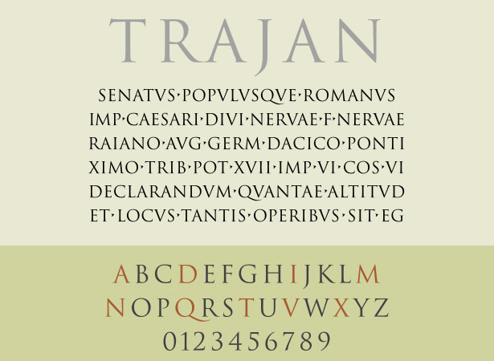

Fonts - Improper Uses
This isn’t a riff on the world’s worst fonts, but rather an invitation for amateur designers and business users to stop abusing some of the world’s best fonts. Nothing is particularly wrong with Impact or Comic Sans as fonts per se, but there is a huge deal wrong with using them in every situation. The 6 fonts below are overused and patently annoying, and we give 6 good reasons to stop using all of them.
One of the world’s most popular header fonts, Impact does have its positives. It’s easy to read, rather striking and great for getting attention. However, it has been misused so frequently that few good designers even bother to acknowledge its existence anymore, preferring to use other high-visibility fonts. Here’s why you should not use it: it’s too thin, too focused and too amateurish to stand out. Impact is the standard choice for office handouts and amateur mailing list items, and it should never be used for a professional logo or public document. Avoid it, and opt for a wider font for your headlines.
It’s hard not to like TheSans . Perfectly spaced and delicately styled, it seems like the perfect font for online body content and short snappy copy. Unfortunately, it is ruined by the uppercase “Q,” which just isn’t styled right for such an otherwise generic, versatile and widely usable typeface. Creativity in typefaces is fantastic: it makes otherwise boring fonts interesting, its flourishes can transform bland documents, and it even allows designers to emphasize certain letters. But the “Q” here just isn’t right. It is style for style’s sake, and it looks a bit silly as part of a typeface that’s otherwise fairly standard.
Trajan , along with the “laurel leaves” icon, has become tragically overused in film posters and other movie marketing material. From fantasy to indie films, marketers have been using this dynamic combo to establish authenticity for some time, and it’s beginning to take its toll on an otherwise pretty font. Here’s why: Trajan has shipped with almost every edition of Adobe’s Creative Suite, making it one of a handful of fonts available to any designer. It’s a great font for occasional titles and small touches, but as an all-purpose font for entertainment and epics, it’s getting a little tired.
Thankfully, Microsoft replaced Arial with Calibri as the default font in Office 2007. Arial was once the standard font in all Windows applications, making it the go-to font for amateurs and thoughtless designers. Microsoft originally chose Arial to skirt licensing issues with the older, slightly more popular Helvetica. By going with Arial, it avoided the licensing fees and got a font that was very similar to Helvetica, with only slight variations, many of which are impossible to spot when the font is used for body text.

Few fonts are as reviled as Comic Sans . The whimsical font really isn’t that bad when used appropriately. Unfortunately, the entire corporate world seems to have chosen it for “Do not enter” signs, product announcements and even scathing sports-related rebukes. Comic Sans is great for children’s products, party invitations and (gasp) comic books. It is not suitable for product announcements, termination notices and funeral invitations. This is a classic case of a good font gone bad through overuse, outright misuse and sheer stupidity.
We get it: you want your website to look like a newspaper. Franklin Gothic is an iconic font that has the potential to look good, but it is all too often misused by amateur designers who want to give their websites a “classic” look or bloggers who are desperate for credibility. Franklin Gothic is great for headlines, short leading questions and other minor design elements. It should not be used for an entire website. While a truly classic offline font, Franklin Gothic is abused too often to be a staple of the web.